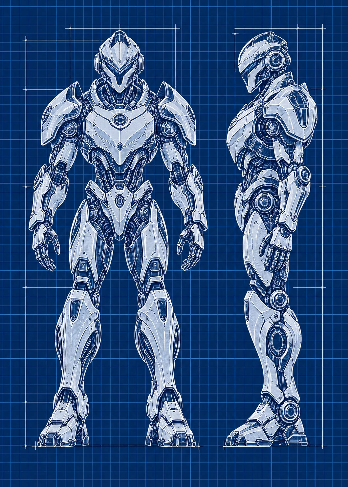

Field Observation
A red crystal cluster glows among flowers in the left foreground.
 ©
©
GENEZYS ARCHIVE · EARTH 1 · Legionnaire
Epoch Guard
Identity & combat record
Archive node 01 / 05

Archive record
Vodary trains inside a glacier, where an entire day can pass in a single breath. The Stasis Ward freezes an enemy's energy in place before the strike follows. The Order says patience is a blade. Vodary has kept that blade sharp for years.
Combat signature
Builds a frozen barrier in continuum: Reduces the target's Cosmara by 100 and deals 80 damage.
Genezys 03:02 ™&©2026LEGIONS
Recovered visual record
Archive node 02 / 05

Full frame available // rotate device to landscape
Technical archive
Archive node 03 / 05

Classified field intelligence
Archive node 04 / 05
FIELD REPORT // ARTIFACT SIGHTING
Field Observation
A red crystal cluster glows among flowers in the left foreground.
Environment
Object Analysis
Key Findings
Motion archive
Archive node 05 / 05
Motion record not yet recovered